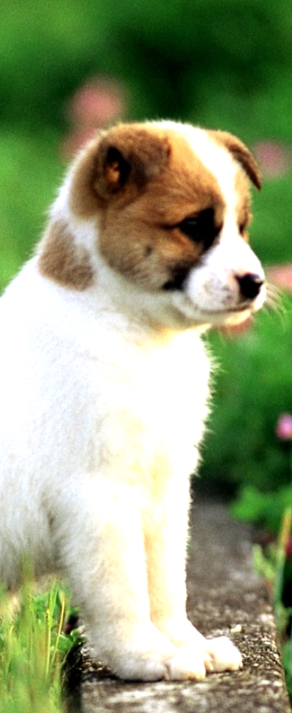

<!DOCTYPE html>
<html>
   <head>
      <script src="https://aframe.io/releases/0.8.2/aframe.min.js"></script>
      <script src="https://unpkg.com/aframe-look-at-component@0.5.1/dist/aframe-look-at-component.min.js"></script>
      <script src="https://npmcdn.com/aframe-event-set-component@3.0.1"></script>
      <script src="https://unpkg.com/aframe-animation-component@^4.1.2/dist/aframe-animation-component.min.js"></script>
      <!-- Functions for coordinate setting -->
      <script type="text/javascript">
         function sphericalToCoordinate(radialDistance, theta, phi) {
           const x = radialDistance * Math.cos(theta) * Math.sin(phi);
           const z = radialDistance * Math.sin(theta) * Math.sin(phi);
           const y = radialDistance * Math.cos(phi);
           return new THREE.Vector3(x, y, z);
         }
         function clamp(value, lowerBound, upperBound) {
           return Math.max(lowerBound, Math.min(upperBound, value));
         }
         function getCoordinatePosition(x, y, r) {
           const radialDistance = r || 35;
           const locationX = clamp(x, 0, 360);
           const locationY = clamp(-y, -90, 90);
           const radianPositionX = locationX / 180 * Math.PI;
           const radianPositionY = (locationY + 90) / 180 * Math.PI;
           return sphericalToCoordinate(radialDistance, radianPositionX, radianPositionY);
         }
      </script>
      <script type="text/javascript" src="components/hotspot.js"></script>
      <script type="text/javascript" src="components/hotspot-pulsating-marker.js"></script>
      <script type="text/javascript" src="components/hotspot-hidden-marker.js"></script>
      <script type="text/javascript" src="components/hotspot-content.js"></script>
   </head>
   <body>
   </body>
</html>
<a-scene inspector="url: https://aframe.io/releases/0.3.0/aframe-inspector.min.js">
   <a-assets>
      <!-- Room sky -->
      
      <!-- Hotspot  -->
      
      <audio src="audio.mp3" id="hotspot-1-audio"></audio>
   </a-assets>
   <a-sky
      src="#sky"
      radius="512">
   </a-sky>
   <a-camera look-controls fov="65" zoom="1" near="1">
      <a-cursor id="cursor"
         raycaster="recursive:true">
      </a-cursor>
   </a-camera>
   <a-entity
      class="hotspot"
      geometry="primitive: plane"
      material="transparent:true;opacity:0"
      hotspot="coordinates: 260 10"
      scale="10 10"
      opacity="1"
      look-at="[camera]">
      <!-- Scene triggers -->
      <a-entity
         class="outer-hotspot-trigger"
         material="
          opacity: 0 0;
          transparent: true"
         geometry="
           primitive:plane;
           height: 1;
           width: 1;"
         position="0 0 -1">
      </a-entity>
      <a-entity
         class="center-hotspot-trigger"
         material="
          opacity: 0 0;
          transparent: true"
         geometry="
          primitive:plane;
          height: .2;
          width: .2;"
         position="0 0 -1">
      </a-entity>
      <!-- /Scene triggers -->

      <!--    PULSATING MARKER    -->
      <a-entity  pulsating-marker
         animation__pulsation="
          property: scale;
          from:1 1 1;
          to:1.3 1.3 1.3;
          loop:true;
          dur:700;
          dir:alternate;">
         <a-image alpha-test=".5"
            animation__scale-out="
              property:scale;
              to:.0001 .0001 .0001;
              dur:500;
              startEvents:start-scale-out;
              pauseEvents:stop-scale-out"
              animation__scale-in="property:scale;
              dur:500;
              to:1 1 1;
              startEvents:start-scale-in;
              pauseEvents:stop-scale-in"
            class="pulsating-hotspot"
            src="icon-hotspot-default.png"/>
      </a-entity>
      <!--    /PULSATING MARKER    -->
      <!--       HIDDEN MARKER -->
      <a-image hidden-marker
         alpha-test=".5"
         class="static-hotspot"
         position="0 0 .1"
         opacity="0"
         animation__fade-in="
           property:opacity;
           from:0;
           to:1;
           dur:500;
           pauseEvents:stop-fade-in;
           startEvents:start-fade-in"
           animation__fade-out="property:opacity;
           from:1;
           to:0;
           dur:500;
           pauseEvents:stop-fade-out;
           startEvents:start-fade-out;"
         src="icon-hotspot-hover.png"/>
      <!--   /HIDDEN MARKER -->
      <a-entity
        hotspot-content="
           audio:#hotspot-1-audio;
           image:#hotspot-1-image;
           text:Hello world
         "
         class="hotspot-content"
         scale="0 0 0"
         width="2"
         height="2"
         position="0 0 -.2"
         animation__scale-out="
           property: scale;
           from: 1 1 1;
           dur: 500;
           to: .0001 .0001 .0001;
           startEvents: start-scale-out;
           pauseEvents: stop-scale-out;"
         animation__scale-in="
           property: scale;
           from: .0001 .0001 .0001;
           dur: 500;
           to: 1 1 1;
           startEvents: start-scale-in;
           pauseEvents: stop-scale-in;">
      </a-entity>
   </a-entity>
</a-scene>
